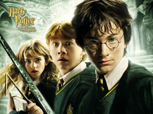
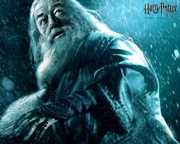

Meet Harry Potter. The young wizard-to-be is an orphan living with his surly relatives. They tried to keep him from getting his acceptance letter to the Hogwarts School of Witchcraft and Wizardry, but they couldn’t withstand the power of magic. The Boy Who Lived is whisked away by the half-giant Hagrid. He learns that he is famous in the world of magic users. He survived an attack by the darkest wizard of them all, Volde… You-Know-Who. He bears a lightning bolt scar on his forehead from the spell gone awry. He is awed and amazed at the world that has opened up to him. He plays Quidditch, makes friends, meets Headmaster Albus Dumbledore and encounters Voldemort for the first time.
Harry has returned for his second year at Hogwarts, but events are taking a darker turn. The mysterious Chamber of Secrets has been opened at the school and not for the first time. Bloody notes are left scrawled in the hallways of the massive school. Students end up petrified. Mudbloods, wizards and witches of an impure bloodline, are threatened. With Ron and Hermione’s help, Harry is able to find out how to get in the chamber. He learns that Tom Riddle, a.k.a. Voldemort, opened the chamber the first time and left part of his soul behind to manipulate Ginny Weasley into doing so in the present. Harry fights off the basilisk that lives in the tunnels and uses one of its fangs to destroy the diary that allowed Tom’s soul to live on.
The biggest takeaway from the third movie? Harry is not alone. He has a godfather. For most of the movie he thinks Sirius Black, madcap escapee from Azkaban, is out for blood. Harry believes that Sirius betrayed his parents and gave away their location to Voldemort. Dumbledore isn’t around full-time to protect him this year either. Harry goes after Sirius looking for revenge. He learns that the fugitive is friends with the new Defense of the Dark Arts teacher, Remus Lupin. Incidentally, Lupin is a werewolf. The old friends are together to fight the person who actually betrayed Harry’s parents: Peter Pettigrew. The loathsome man was in hiding in Animagus form as Ron Weasley’s rat. In the end, Sirius is recaptured by the Dementors – the wardens of Azkaban – and they plan to take his soul. He is saved only by Harry and Hermione going back in time to save Hagrid’s Hippogriff. Sirius reveals to Harry that he is his godfather before he escapes Hogwarts on the back of the winged Buckbeak. Harry has to return to the horrible Dursley house for the summer.
age. He has to go through with the challenges that involve dragons, merpeople, and a deadly maze. Also, there is a Yule Ball and Hermione looks stunning. The Triwizard Cup at the end of the maze ends up being a Portkey that transports Harry and classmate Cedric Diggory right into Voldemort’s lap. Voldemort has shape again, and he is terrible and frightening. He kills Diggory, and Harry barely escapes. He was set up by the latest Defense Against the Dark Arts teacher. Sort of. A Death Eater has been sucking down Polyjuice Potion and pretending to be Mad Eye Moody.
Voldemort is back. Dumbledore and Harry Potter are mocked by the entire wizarding community for making public statements about the Dark Lord. Dumbledore, Sirius Black, Lupin, and more have gone underground and revived the Order of the Phoenix. It’s a secret club that exists solely to stop Voldemort. At Hogwarts, Harry is frustrated by the newest Defense Against… teacher Dolores Umbridge. She refuses to teach them defensive magic. In defiance, Harry forms Dumbledore’s Army with his classmates. They use the Room of Requirement as a training center. Harry keeps getting visions that are really him seeing through Voldemort’s eyes. They have a connection. Because of this, he sees Voldemort torturing Sirius at the Ministry of Magic. Harry and his mini-army sneak out of Hogwarts to save the day. They hold their own against Voldemort’s followers and the Dark Lord himself, but they do not win. They are saved only by the arrival of the Order of the Phoenix and Dumbledore. Voldemort still manages to kill Sirius. The wizarding world finally understands that Voldemort is a threat.
Dumbledore pulls Harry closer than ever and asks for his help in the battle against Voldemort. The movie unravels the history of Tom Riddle. They find out that Riddle learned how to create horcruxes. The physical objects that hold pieces of the soul are the key to defeating Voldemort. He didn’t just create one horcrux; he created seven. The dangerous race is on to find the horcruxes before Voldemort realizes what his enemies are planning. He is so arrogant that he can’t conceive of anyone uncovering this plan. The quest proves to be deadly for Dumbledore. Draco Malfoy was given the assassination assignment by Voldemort. When he was unable to commit the deed, Severus Snape stepped in.
Harry has to move forward without Dumbledore. He believes his mission is collecting the remaining horcruxes and destroying them. Voldemort and his followers control the Ministry of Magic. Nowhere is safe. Harry, Ron, & Hermione can’t return to Hogwarts. When they are attacked at Ron’s home they disappear and start life on the run. The trio has to constantly stay on the move and protect their location carefully. They expend much effort only to destroy one horcrux and to learn about the Deathly Hallows. They make narrow escape after narrow escape and dear friends die. Meanwhile, Voldemort finds the most powerful wand ever made.
It’s all over between Harry and Voldemort with just one spell. Harry is left alive, the true master of the Hallows, and Voldemort is killed for good. He now understands more than he ever has about love (which he loves Ginny), and life, and sacrifice, and in spite of the loss of many of his friends during the last battle, is grateful for the second chance he’s been given at life, and love.